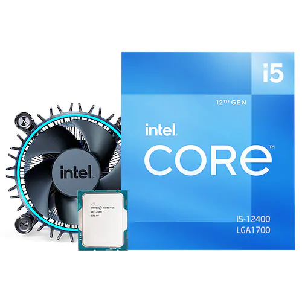

인텔 코어i5-12세대 12400 (엘더레이크) (정품)
상세 스펙
인텔(소켓1700) / 10nm(인텔7) / 6코어 / 12쓰레드 / 기본 클럭: 2.5GHz / 최대 클럭: 4.4GHz / L3 캐시: 18MB / TDP: 65~117W / PCIe5.0, 4.0 / 메모리 규격: DDR5, DDR4 / 4800, 3200MHz / 내장그래픽: 탑재 / 인텔 UHD 730 / 기술 지원: 하이퍼스레딩 , 옵테인 / 쿨러: 인텔 기본쿨러 포함 / 출시가: 192달러 (VAT별도)
제조회사 인텔 ( 제조사 웹사이트 바로가기) 등록년월 2022년 01월 인텔 CPU종류 코어i5-12세대 소켓 구분 인텔(소켓1700) 출시일 2022 1분기 제조 공정 10nm(인텔7) 사양 코어 수 6코어 쓰레드 수 12쓰레드 기본 클럭 2.5GHz 최대 클럭 4.4GHz L3 캐시 18MB 연산 체계 64비트 버스 속도 DMI4.0 8 GT/s TDP 65~117W PCIe 버전 PCIe5.0, 4.0 최대 PCIe 레인수 20레인 메모리 사양 최대 메모리 크기 128GB 메모리 규격 DDR5, DDR4 메모리 클럭 4800, 3200MHz 메모리 채널 2 그래픽 사양 내장그래픽 탑재 GPU 모델명 인텔 UHD 730 GPU 코어 속도 1450MHz 기술 지원 하이퍼스레딩 ○ 옵테인 ○ 구성 패키지 형태 정품 쿨러 인텔 기본쿨러 포함 KC인증 적합성평가인증 상세설명 / 판매 사이트 문의 인증번호 확인 안전확인인증 상세설명 / 판매 사이트 문의 인증번호 확인